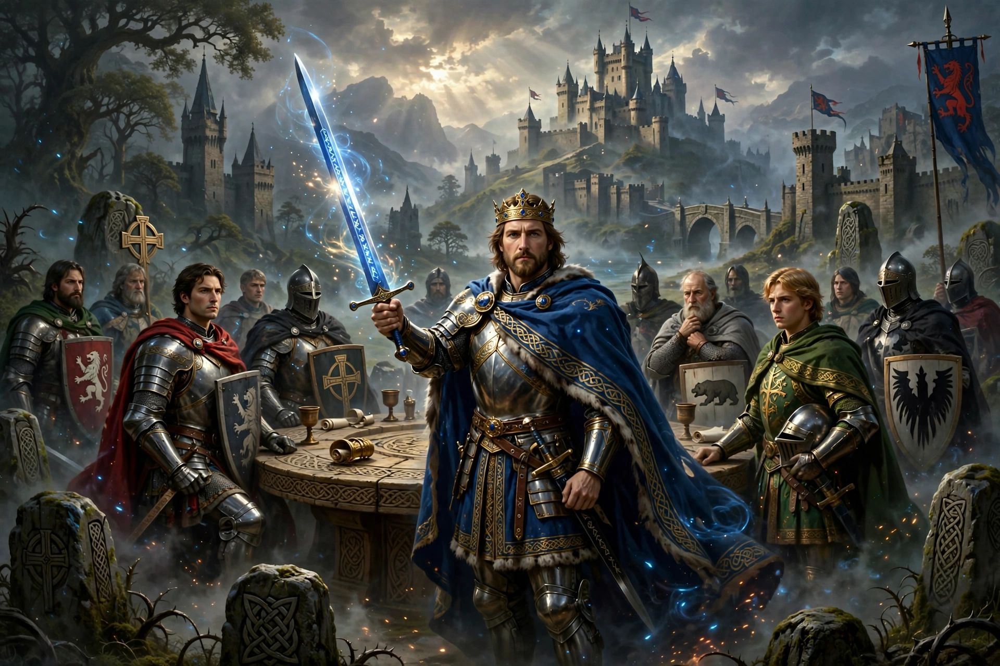

The Matter of Britain (French: matière de Bretagne) is the body of medieval literature and legendary material associated with Great Britain and Brittany and the legendary kings and heroes associated with them, particularly King Arthur and the Knights of the Round Table.

| Matter of Britain | |
|---|---|
| Subject | Arthurian legend |
| Key texts | Historia Regum Britanniae, Le Morte d'Arthur |
Jean Bodel classified medieval romance into the Matters of Rome, France, and Britain. Geoffrey of Monmouth's Historia Regum Britanniae (c. 1136) popularised Arthur, Merlin, and Guinevere.
Chrétien de Troyes added Lancelot and the Holy Grail. Later cycles include the Vulgate Cycle, and Thomas Malory's Le Morte d'Arthur (1485). Welsh sources include the Mabinogion. See also Medb for Irish mythology.